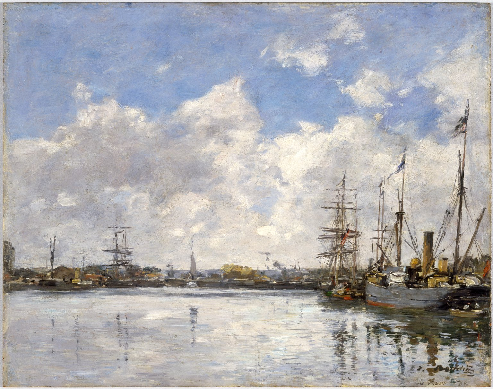
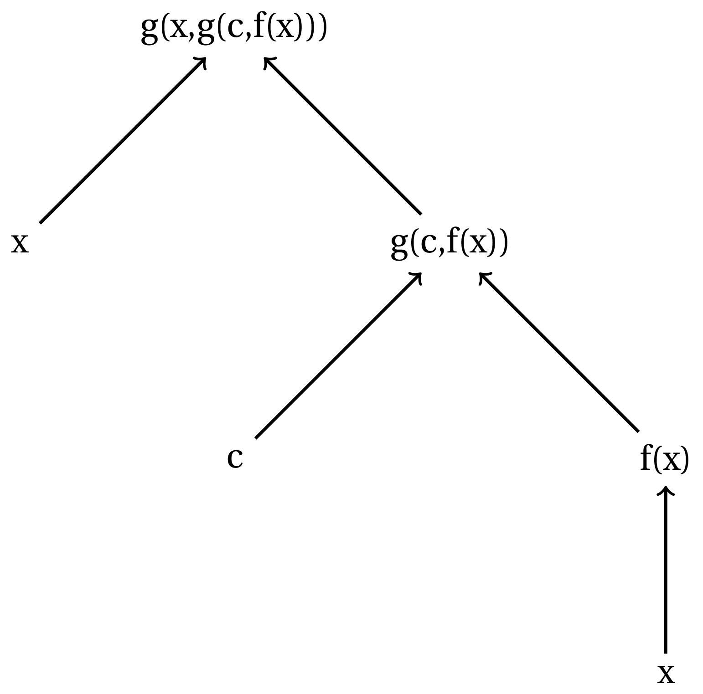
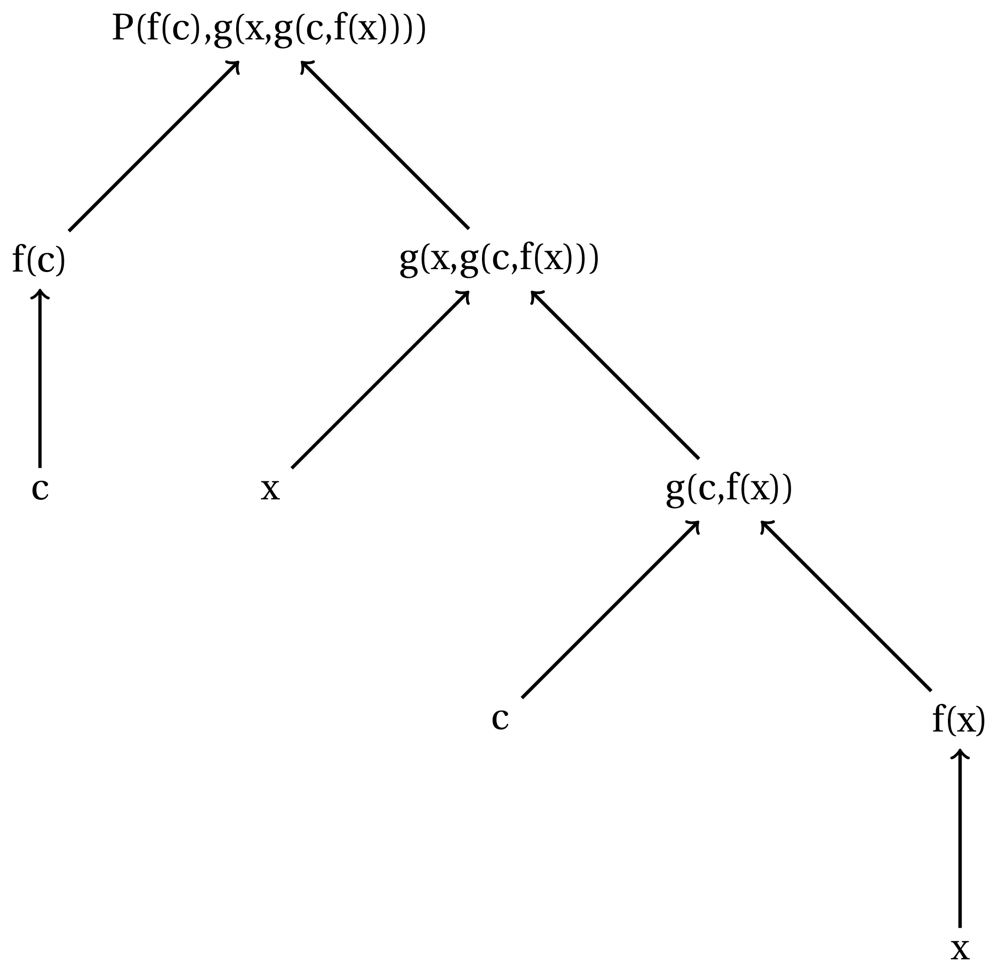

Hyperreals: Λογικά πράγματα…#

Ο πίνακας Η Χάβρη, το λιμάνι του Eugène Boudin.#
Στο πρώτο μέρος της σειράς μας για τους υπερπραγματικούς αριθμούς μιλήσαμε λίγο για απειροστά, λίγο για άπειρους αριθμούς και, γενικά, μιλήσαμε για πώς μπορεί να είναι ο κόσμος των απειροστών, αν αυτά υπάρχουν. Ωστόσο, υπάρχουν;
Μία μικρή εισαγωγή στη λογική#
Πριν ασχοληθούμε άμεσα με το αν υπάρχουν ή οχι απειροστά, θα μας απασχολήσει λίγο ένα πολύ ενδιαφέρον πεδίο των μαθηματικών: η Πρωτοβάθμια Κατηγορηματική Λογική (ΠΚΛ). Η ΠΚΛ είναι ένας σχετικά σύγχρονος κλάδος των μαθηματικών που προέκυψε, μεταξύ άλλων, από την ανάγκη να θεμελιωθούν αυστηρά οι μέθοδοι απόδειξης που χρησιμοποιούνται στα μαθηματικά αλλά, κυρίως, να εξερευνήσουμε σε ποιον βαθμό είναι εφικτό να γίνουν μαθηματικές αποδείξεις αυτόματα και, σε περίπτωση που κάτι τέτοιο είναι εφικτό, σε ποιον βαθμό και υπό ποιες προϋποθέσεις αυτό είναι αποδοτικό. Εμάς, προς το παρόν, δε θα μας απασχολήσουν όλα αυτά, παρά μόνο θα χρησιμοποιήσουμε κάποια αποτελέσματα της ΠΚΛ έτσι ώστε να μπορέσουμε τελικά να συμπεράνουμε αν όσα είπαμε ως τώρα για τα απειροστά είναι… λογικά.
Βασικοί ορισμοί#
Ξεκινάμε, όπως είναι φυσιολογικό, με κάποια βασικά στοιχεία της ΠΚΛ τα οποία θα μας βοηθήσουν να χτίσουμε πιο περίπλοκες έννοιες. Το πρώτο πράγμα για το οποίο οφείλουμε να μιλήσουμε είναι το «αλφάβητο» της λογικής, με το οποίο θα «εκφραζόμαστε». Υποθέτουμε ότι έχουμε στη διάθεσή μας τα ακόλουθα σύμβολα, των οποίων τον ρόλο θα εξηγήσουμε ευθύς αμέσως:
Λογικά σύμβολα:
Παρενθέσεις: ( και ).
Σύμβολα προτασιακών συνδέσμων: \(\rightarrow,\ \neq,\ \lor,\ \land\) .
Σύμβολα μεταβλητών: Ένα σύμβολο για κάθε θετικό ακέραιο, έστω \(x_1,x_2,\ldots\)
Σύμβολο ισότητας: \(=\) .
Παράμετροι:
Σύμβολα ποσοδεικτών: \(\forall,\ \exists\) .
Σύμβολα κατηγορημάτων: Για κάθε θετικό ακέραιο \(n\) έχουμε ένα, ενδεχομένως κενό, σύνολο συμβόλων, \(P_n\) , τα στοιχεία του οποίου ονομάζουμε \(n-\) θέσια σύμβολα κατηγορημάτων.
Σύμβολα σταθερών: Ένα σύνολο συμβόλων, \(C\) , ενδεχομένως κενό, τα οποία ονομάζουμε σταθερές.
Σύμβολα συναρτήσεων: Για κάθε θετικό ακέραιο \(n\) έχουμε ένα, ενδεχομένως κενό, σύνολο συμβόλων, \(F_n\) , τα στοιχεία του οποίου ονομάζουμε \(n-\) θέσια σύμβολα συναρτήσεων.
Ένα σύνολο συμβόλων με τα παραπάνω στοιχεία θα το ονομάζουμε πρωτοβάθμια γλώσσα.
Ωραία όλα αυτά, αλλά τι ακριβώς σημαίνουν; Αρχικά, ας εξηγήσουμε γιατί έχουμε χωρίσει τα σύμβολα του αλφαβήτου μας σε λογικά σύμβολα και σε παραμέτρους. Ο σκοπός μας είναι τα λογικά σύμβολα να υποδηλώνουν κάποιες συγκεκριμένες λογικές σχέσεις μεταξύ των οντοτήτων τις οποίες θα πραγματευόμαστε, ενώ οι παράμετροι της γλώσσας μας να ερμηνεύονται σε κάθε «περίσταση» με τον τρόπο που μας εξυπηρετεί - θα αποσαφηνιστούν και τα δύο στην πορεία. Ας πιάσουμε τώρα τα λογικά σύμβολα:
Οι παρενθέσεις η αλήθεια είναι ότι δεν έχουν και κάποια ιδιαίτερη λογική ερμηνεία, πέρα από το να εξυπηρετούν την ορθή προτεραιοποίηση των εκφράσεων που χρησιμοποιούμε. Με άλλα λόγια, μας δείχνουν τη σειρά με την οποία πρέπει να διαβάσουμε μία πρόταση που έχουμε γράψει στη γλώσσα μας, έτσι ώστε αυτή τελικά να έχει το επιδιωκόμενο νόημα και όχι κάποιο άλλο ή/και κανένα.
Οι προτασιακοί σύνδεσμοι κωδικοποιούν βασικές λογικές σχέσεις στη γλώσσα μας, όπως της άρνησης \((\neg)\) , της σύζευξης \((\land)\) , της διάζευξης \((\lor)\) και της απλής συνεπαγωγής \((\rightarrow)\) . Για να είμαστε σαφέστεροι, ας δούμε ένα παράδειγμα από τη συνήθη γλώσσα μας - τα ελληνικά. Λέμε, «αν δεν βρέχει ή αν βρέχει και δε φυσάει πολύ τότε θα βγω μία βόλτα». Στην παραπάνω πρόταση, οι λέξεις σε bold υποδηλώνουν κάποιες απλές λογικές σχέσεις. Για την ακρίβεια:
Η λέξη και υποδηλώνει τη λογική σύζευξη. Με άλλα λόγια, μία έκφραση της μορφής «Α και Β» αληθεύει ακριβώς όταν αληθεύουν και το Α και το Β ταυτόχρονα. Για παράδειγμα, η πρόταση «αγόρασα τυρί και ψωμί» αληθεύει αν στις σακούλες με τα ψώνια μου - πάνινες, γιατί σεβόμαστε το περιβάλλον - υπάρχει μέσα και τυρί αλλά και ψωμί.
Η λέξη ή υποδηλώνει τη λογική διάζευξη η οποία, συχνά, διαφοροποιείται από τη συνήθη διάζευξη που χρησιμοποιούμε στην καθομιλουμένη. Στην καθημερινή μας γλώσσα πολλές φορές ο σύνδεσμος «ή» έχει τον χαρακτήρα της αποκλειστικής διάζευξης, υπό την έννοια ότι ισχύει αποκλειστικά μία από τις δύο διαζευγνυόμενες προτάσεις. Αντιθέτως, στη λογική, η διάζευξη έχει πάντα χαρακτήρα συμπεριληπτικό, υπό την έννοια ότι η έκφραση «Α ή Β» υπονοεί ότι τουλάχιστον μία από τις δύο προτάσεις ισχύει, με το ενδεχόμενο να ισχύουν και οι δύο ταυτόχρονα - όπως συμβαίνει με την ένωση δύο συνόλων στα μαθηματικά.
Η λέξη δεν, όπως και οι λέξεις μη, όχι ή γενικά, οποιοδήποτε αρνητικό μόριο, υποδηλώνουν τη λογική άρνηση. Με άλλα λόγια, η έκφραση «όχι Α» αληθεύει ακριβώς στις περιπτώσεις όπου η Α δεν αληθεύει.
Τέλος, το ζευγάρι λέξεων Αν … τότε … υπονοεί τη λογική συνεπαγωγή. Εδώ χρειάζεται μία μικρή αποσαφήνιση, μιας και συχνά το σχήμα «αν … τότε …» στην καθομιλουμένη χρησιμοποιείται για να υποδηλώσουμε, στην πραγματικότητα, τη λογικά ισχυρότερη σχέση της λογικής ισοδυναμίας - «αν και μόνον αν». Όταν λέμε «Αν βρέξει τότε θα πάρω ομπρέλα», εννοούμε, με όρους λογικής, ότι στην περίπτωση που βρέξει θα πάρω (μαζί μου) ομπρέλα, αλλά σε περίπτωση που δεν βρέξει τότε δεν έχει σημασία τι θα κάνω - δηλαδή η συνεπαγωγή θα αληθεύει αν δε βρέξει. Με άλλα λόγια, μία λογική συνεπαγωγή είναι αληθής είτε αν τόσο η υπόθεση και το συμπέρασμά της αληθεύουν - βρέχει κι έχω ομπρέλα - είτε αν η υπόθεσή της δεν αληθεύει - δεν βρέχει. Πολλές φορές, θα μας είναι πιο εύκολο να σκεφτόμαστε τη λογική συνεπαγωγή «Αν Α τότε Β» σαν τη λογικά ισοδύναμή της έκφραση «όχι Α ή Β» - δηλαδή είτε δεν ισχύει η υπόθεση είτε ισχύει το συμπέρασμα. Πριν κλείσουμε την κουβέντα για τους προτασιακούς μας συνδέσμους, να πούμε ότι θα μπορούσαμε να μην έχουμε επιλέξει τόσους πολλούς συνδέσμους, καθώς, για παράδειγμα, η άρνηση και η λογική συνεπαγωγή επαρκούν για να εκφράσουμε τόσο τη σύζευξη όσο και τη διάζευξη. Ωστόσο, δώσαμε στον εαυτό μας αυτήν την ευκολία των περισσότερων συνδέσμων, κυρίως για να απλοποιήσουμε τις εκφράσεις που θα γράφουμε σε ό,τι έχει να κάνει με τον συμβολισμό.
Τα σύμβολα μεταβλητών είναι σύμβολα τα οποία απλώς «πιάνουν χώρο» και εξηγούμαστε ευθύς αμέσως. Όπως θα δούμε παρακάτω, έχουμε δεσμεύσει ένα άλλο σύνολο συμβόλων για να αναπαριστούμε τις οντότητες του εκάστοτε σύμπαντος στο οποίο αναφερόμαστε. Ωστόσο, πολλές φορές θέλουμε να διατυπώσουμε προτάσεις γενικά, χωρίς να περιοριστούμε σε μία ή, τέλος πάντων, λίγες συγκεκριμένες οντότητες. Για παράδειγμα, αν θέλουμε να πούμε στη γλώσσα της λογικής ότι «υπάρχει ένας ψηλός άνθρωπος» θα το διατυπώσουμε, όπως θα δούμε παρακάτω, κάπως έτσι: «Υπάρχει ένα Χ, όπου το Χ είναι άνθρωπος και το Χ είναι ψηλό(ς)». Με άλλα λόγια, για να αναφερθούμε γενικόλογα σε κάποια οντότητα με κάποιες ιδιότητες χρησιμοποιούμε μεταβλητές. Αν τώρα αυτός ο ψηλός άνθρωπος είναι, για παράδειγμα, η Κατερίνα - μία συγκεκριμένη οντότητα, δηλαδή - τότε, αυτή η μεταβλητή, Χ, θα αντικατασταθεί με την τιμή «Κατερίνα» (θα δούμε περισσότερα για αυτό στην πορεία). Να πούμε εδώ ότι με τα σύμβολα μεταβλητών θα κάνουμε μία αβαρία. Παραπάνω είπαμε ότι έχουμε στη διάθεσή μας ένα σύνολο συμβόλων της μορφής \(x_1,x_2,\ldots\) . Για λόγους ευκολίας, αντί αυτών θα χρησιμοποιούμε πιο «συνηθισμένα» σύμβολα, όπως \(x,y,z,u,v,w\) κ.λπ.
Το σύμβολο ισότητας δεν είναι τίποτα παραπάνω από ένα σύμβολο της γλώσσας μας το οποίο υποδηλώνει ότι δύο μεταβλητές ή δύο οντότητες συμπίπτουν. Έτσι, για παράδειγμα, η έκφραση \(x=y\) υποδηλώνει ότι οι μεταβλητές \(x,y\) αντιστοιχούν στην ίδια οντότητα - όποια κι αν είναι αυτή. Είναι σημαντικό εδώ να πούμε ότι το σύμβολο ισότητας έχει πάντα αυτήν την ερμηνεία, πράγμα που θα φωτιστεί περισσότερο στην πορεία ως προς το γιατί είναι σημαντικό.
Τα λογικά σύμβολα, λοιπόν, της γλώσσας μας, μάς δίνουν ένα χρήσιμο «λογικό» αλφαβητάρι με το οποίο θα χτίσουμε εκφράσεις στις οποίες στην πορεία θα αποδίδουμε νόημα, υπό διάφορες συνθήκες. Ας περάσουμε τώρα στην επεξήγηση του ρόλου των παραμέτρων της γλώσσας μας:
Τα σύμβολα των ποσοδεικτών είναι πρακτικά δύο σύμβολα τα οποία σε κάθε περίσταση θα επιδιώκουμε να τα ερμηνεύουμε ως «για κάθε» \((\forall)\) και «υπάρχει» \((\exists)\) αντίστοιχα. Πρακτικά, μας δίνουν τη δυνατότητα να διατυπώσουμε ισχυρισμούς αναφερόμενοι αφηρημένα σε όλες ή κάποια από τις οντότητες που υπάρχουν στο σύμπαν μας. Όπως θα δούμε παρακάτω, θα μπορούσαμε να είχαμε επιλέξει μονάχα ένα από τα δύο σύμβολα ποσοδεικτών, ωστόσο, και πάλι για λόγους ευκολίας και συντόμευσης των εκφράσεών μας, διατηρήσαμε και τα δύο.
Τα σύμβολα κατηγορημάτων είναι μία ιδιαίτερα χρήσιμη κατηγορία συμβόλων στην ΠΚΛ. Πρακτικά, ένα σύμβολο κατηγορήματος - ή, πιο απλά, κατηγόρημα - εκφράζει μία σχέση μεταξύ οντοτήτων του σύμπαντός μας. Για παράδειγμα, αν οι οντότητες του σύμπαντός μας είναι οι άνθρωποι του πλανήτη Γη, τότε μία σχέση θα μπορούσε να είναι η σχέση μητρότητας μεταξύ δύο ατόμων, η οποία θα μπορούσε να εκφραστεί μέσα από ένα διμελές κατηγόρημα, ας πούμε το \(P(x,y)\) το οποίο στην περίπτωσή μας θα ερμηνευόταν ως «η οντότητα \(x\) είναι μητέρα της οντότητας \(y\) ». Προσέξτε την έκφραση που χρησιμοποιήσαμε παραπάνω: «στην περίπτωσή μας θα ερμηνευόταν ως». Αυτή είναι η ουσιαστική διαφορά ανάμεσα στα λογικά σύμβολα που είδαμε παραπάνω και τις παραμέτρους της γλώσσας μας. Ενώ τα λογικά σύμβολα έχουν μία και σταθερή ερμηνεία, οι παράμετροι της γλώσσας μας μπορούν να ερμηνεύονται κατά το δοκούν, ανάλογα με το τι έχουμε κάθε φορά στα χέρια μας. Πριν αφήσουμε τα σύμβολα κατηγορήματος, να πούμε εδώ ότι ιδιαίτερο ρόλο παίζουν, μεταξύ όλων, τα μονομελή σύμβολα κατηγορήματος. Τυπικά, εκφράζουν μονομελείς σχέσεις στο σύμπαν μας, ωστόσο, μία μονομελής σχέση είναι, επί της ουσίας, ένα σύνολο οντοτήτων του σύμπαντός μας. Έτσι, συστηματικά, θα σκεφτόμαστε τα μονομελή κατηγορήματα ως σύνολα από οντότητες όταν θα καλούμαστε να αποδώσουμε μία ερμηνεία σε κάποια λογική έκφραση - αυτό κρατήστε το για τη συνέχεια.
Τα σύμβολα σταθερών ερμηνεύονται ως εκάστοτε οντότητες του σύμπαντός μας. Με άλλα λόγια, τα σύμβολα σταθεράς - ή απλώς σταθερές - αντιστοιχούν σε (κάποιες, ενδεχομένως όχι όλες, ίσως και καμία) συγκεκριμένες υπάρξεις που ζουν μέσα στον «κόσμο» μας. Είναι πιθανό μία πρωτοβάθμια γλώσσα να μην περιέχει κανένα σύμβολο σταθεράς, χωρίς αυτό να σημαίνει ότι τα σύμπαντα που περιγράφει η γλώσσα δεν περιέχουν καμία οντότητα. Απλώς, δεν επιλέγουμε να συμβολίζουμε κάποια από τις οντότητες του σύμπαντος στο οποίο αναφερόμαστε με κάποιον ιδιαίτερο τρόπο.
Τα σύμβολα συναρτήσεων ή, απλούστερα, συναρτήσεις, ερμηνεύονται ως συναρτήσεις κατά φυσιολογικό τρόπο στο σύμπαν μας. Αυτό σημαίνει ότι π.χ. ένα τριμελές σύμβολο συνάρτησης \(f\in F_3\) ερμηνεύεται σαν μία συνάρτηση τριών μεταβλητών που «ζουν» στο σύμπαν μας. Με άλλα λόγια, κάθε σύμβολο συνάρτησης - ενδεχομένως να μην υπάρχει κανένα τέτοιο - ερμηνεύεται ως μία αντιστοίχιση μεταξύ στοιχείων του σύμπαντός μας. Πριν κλείσουμε τη μικρή αυτή συζήτηση να αναφέρουμε ότι τα σύμβολα συναρτήσεων είναι , πρακτικά, μία «πολυτέλεια», διόλου περιττή, ωστόσο. Πράγματι, κάθε \(n-\) μελές σύμβολο συνάρτησης μπορεί να περιγραφεί από ένα \(n+1-\) μελές σύμβολο κατηγορήματος - όπως π.χ. μία συνάρτηση μίας μεταβλητής μπορεί να περιγραφεί πλήρως από το γράφημά της. Καίτοι περιττά, θα τα χρησιμοποιούμε γιατί απλοποιούν ιδιαίτερα τους συμβολισμούς μας.
Έχοντας δώσει κάποιες βασικές εξηγήσεις για τη γλώσσα μας, καιρός να περάσουμε σε λίγο βαθύτερα νερά.
Σύνταξη και Σύμπαντα#
Μπορώ άνετα να φανταστώ το τελευταίο μέρος της σειράς Σταρ Τρεκ να τιτλοφορείται ακριβώς έτσι: Σταρ Τρεκ: Σύνταξη και Σύμπαντα. Ωστόσο, εμείς θα μείνουμε στη Γη - τουλάχιστον όσο συνηθίζουμε να μένουμε στα επίγεια οι μαθηματικοί - και θα συνεχίσουμε να δομούμε τη γλώσσα που θα χρησιμοποιήσουμε στα παρακάτω. Ως τώρα μιλήσαμε για τα βασικά σύμβολα που θα χρησιμοποιούμε και το πώς έχουμε πρόθεση να τα ερμηνεύσουμε. Με άλλα λόγια, προσδιορίσαμε αυστηρά τι μπορεί να αποτελέσει αλφάβητο μίας πρωτοβάθμιας γλώσσας ενώ δώσαμε και κάποιες κατευθύνσεις ως προς τη σημασιολογία της γλώσσας μας - περίπου. Τι μας μένει να προσδιορίσουμε, λοιπόν;
Σύνταξη#
Σαφώς, τη γραμματική και το συντακτικό αυτής της γλώσσας. Διότι, μιλήσαμε για τα σύμβολα που έχουμε στη διάθεσή μας, αλλά τι θα κάνουμε με αυτά; Θα καθόμαστε να τα κοιτάμε; Προφανώς, όχι. Όπως φαντάζεστε, με αυτά θα σχηματίσουμε λέξεις ή, καλύτερα, εκφράσεις. Για να μπορέσουμε όμως να δομήσουμε μία έκφραση, χρειάζεται να έχουμε και κάποιους κανόνες. Ειδάλλως, το παρακάτω θα μπορούσε να διεκδικήσει επάξια τον ρόλο μίας εκφράσης της γλώσσας μας με νόημα:
Ευτυχώς για εμάς, το παραπάνω δεν έχει κανένα νόημα - τουλάχιστον χωρίς να το βλέπουμε αυτό ως κάποια μορφή τέχνης. Για την ακρίβεια, οι εκφράσεις που έχουν νόημα για εμάς είναι αρκετά λίγες σε σχέση με το πόσες είναι αυτές που μπορούμε να κατασκευάσουμε - ακριβώς όπως συμβαίνει με τις συνεχείς συναρτήσεις - αλλά αυτό δε μας πειράζει. Παρακάτω θα καθορίσουμε ακριβώς αυτές τις εκφράσεις, χτίζοντάς τες λιθαράκι-λιθαράκι.
Αρχικά, ορίζουμε ως όρους εκείνες τις εκφράσεις οι οποίες αποτελούνται είτε από ένα σύμβολο σταθεράς, είτε από ένα σύμβολο μεταβλητής είτε από σύμβολα συναρτήσεων εφαρμοσμένα «με κατάλληλο τρόπο». Σαφώς, εδώ πρέπει να ξεκαθαρίσουμε τι είναι αυτός ο κατάλληλος τρόπος. Γιʹ αυτό και θα δώσουμε τον ακόλουθο αναδρομικό ορισμό της έννοιας του όρου:
Τώρα μπορεί να φαίνεται παράδοξο ότι χρησιμοποιήσαμε την έννοια του όρου καθώς τον ορίζαμε, αλλά δεν είναι. Ο παραπάνω ορισμός, όπως αναφέραμε, είναι αναδρομικός -ή, όπως λέμε συχνά, επαγωγικός. Τέτοιοι ορισμοί έχουν μία φαινομενικά αυτοαναφορική δομή, υπό την εξής έννοια
πρώτα ορίζουμε την οριστέα έννοια σε κάποια ή κάποιες βασικές περιπτώσεις άμεσα - περιγράφοντάς την ακριβώς,
στη συνέχεια ορίζουμε την οριστέα έννοια στις υπόλοιπες περιπτώσεις χρησιμοποιώντας αναδρομικά τις βασικές περιπτώσεις του προηγούμενου βήματος.
Με αυτό κατά νου, μπορούμε να φανταστούμε τους όρους της γλώσσας μας «οργανωμένους» ως εξής:
Σε πρώτο επίπεδο έχουμε όλα τα σύμβολα σταθερών και μεταβλητών.
Σε δεύτερο επίπεδο έχουμε όλα τα σύμβολα συναρτήσεων που έπειτα ακολουθούνται από σύμβολα μεταβλητών ή/και σταθερών.
Σε τρίτο επίπεδο έχουμε όλα τα σύμβολα συναρτήσεων που ακολουθούνται είτε από στοιχεία του πρώτου επιπέδου είτε από στοιχεία του δεύτερου.
Σε τέταρτο επίπεδο έχουμε όλα τα σύμβολα συναρτήσεων που ακολουθούνται από στοιχεία των τριών πρώτων επιπέδων.
κ.ο.κ.
Έτσι, μπορούμε κάθε όρο να τον αποτυπώσουμε με μία δενδροειδή δομή. Για παράδειγμα, αν έχουμε στη διάθεσή μας μία μεταβλητή \(x\) , μία σταθερά \(c\) , ένα μονομελές σύμβολο συνάρτησης \(f\) κι ένα διμελές σύμβολο συνάρτησης \(g\) , τότε μπορούμε, μεταξύ άλλων, να κατασκευάσουμε τους εξής όρους:
\(fx\)
\(gcfx\)
\(gxgcfx\)
Σε αυτό το σημείο μπορούμε να αναρωτηθούμε ποιο το νόημα των παραπάνω. Η αλήθεια είναι ότι ο παραπάνω συμβολισμός - επονομαζόμενος και πολωνικός - είναι λίγο δυσανάγνωστος. Σε αυτόν τον συμβολισμό ο τελεστής και ο τελεστέος δε διαχωρίζονται κάπως μεταξύ τους καθώς επίσης δε διαχωρίζονται κάπως και οι τελεστέοι που αντιστοιχούν στον ίδιο τελεστή μεταξύ τους. Έτσι, θα κάνουμε μία μικρή αβαρία σε σχέση με τον ορισμό μας και θα εισάγουμε παρενθέσεις αμέσως μετά από κάθε σύμβολο συνάρτησης αλλά και στο τέλος της λίστας των ορισμάτων κάθε συμβόλου συνάρτησης. Επίσης, θα διαχωρίζουμε τα ορίσματα ενός συμβόλου συνάρτησης με κόμματα για να μπορούμε να τα διαβάζουμε πιο εύκολα. Με αυτά κατά νου, τα παραπάνω γράφονται ως εξής:
\(f(x)\)
\(g(c,f(x))\)
\(g(x,g(c,f(x)))\)
Πολύ καλύτερα τώρα! Μάλιστα, αρκετές φορές είναι χρήσιμο να έχουμε κατά νου και τη δενδρική αναπαράσταση ενός όρου, όπως για παράδειγμα φαίνεται παρακάτω:

Η δενδρική αναπαράσταση του \(g(x,g(c,f(x)))\) .#
Οι όροι, διαισθητικά, αποτελούν απλές οντότητες ή, γενικότερα, ονοματικές φράσεις που αφορούν οντότητες του σύμπαντός μας. Για παράδειγμα, αν ερμηνεύσουμε στο παραπάνω παράδειγμα το \(f\) σαν «πατέρας του», το \(g\) σαν «παππούς των» - μιας και είναι διμελές σύμβολο, έχει δύο ορίσματα, άρα θέλουμε πληθυντικό - και το \(c\) σαν «Κώστας» τότε το \(g(x,g(c,f(x)))\) ερμηνεύεται ως:
«ο παππούς κάποιου και του παππού του Κώστα και του πατέρα αυτού του κάποιου».
Εντάξει, όχι και κάτι ενδιαφέρον, αλλά είναι πράγματι μία ονοματική φράση που αναφέρεται σε κάποιες οντότητες του σύμπαντός μας - το οποίο σίγουρα περιλαμβάνει κάποιον Κώστα.
Χρησιμοποιώντας τώρα τους όρους, θα ορίσουμε τους ατομικούς τύπους. Εδώ δε θα χρειαστούμε κάποιον αναδρομικό ορισμό:
Θα ονομάζουμε μία ακολουθία συμβόλων μίας πρωτοβάθμιας γλώσσας ατομικό τύπο αν αποτελείται από ένα \(n-\) θέσιο σύμβολο κατηγορήματος ακολουθούμενο από \(n-\) όρους.
Δεδομένου ότι, όπως είπαμε, τα κατηγορήματα εκφράζουν σχέσεις, οι ατομικοί τύποι εκφράζουν κι αυτοί απλές σχέσεις μεταξύ διαφόρων οντοτήτων του σύμπαντός μας. Αν, για παράδειγμα, θεωρήσουμε το διμελές κατηγόρημα \(P\) και ερμηνεύσουμε το \(P(x,y)\) ως «τα \(x\) και \(y\) είναι αδέρφια» τότε ο ακόλουθος ατομικός τύπος:
ερημνεύεται ως:
«ο πατέρας του Κώστα και ο παππούς κάποιου και του παππού του Κώστα και του πατέρα αυτού του κάποιου είναι αδέρφια».
Παρακάτω βλέπουμε και την αντίστοιχη δενδρική αναπαράσταση:

Άλλη μία δενδρική αναπαράσταση.#
Χρησιμοποιώντας τώρα τους ατομικούς τύπους φτάνουμε στην έννοια του καλοσχηματισμένου τύπου (ΚΣΤ). Επειδή νιώθουμε αρκετά άνετα πλέον, δίνουμε απευθείας των αναδρομικό ορισμό:
Πρακτικά, όπως και με τους όρους, ένας ΚΣΤ, πέρα από ατομικός τύπος, μπορεί να προκύψει από άλλους ΚΣΤ είτε μέσω της χρήσης λογικών συνδέσμων είτε μέσα από κατάλληλη ποσόδειξη. Για παράδειγμα, τα ακόλουθα είναι ΚΣΤ - θεωρήστε \(f,g,P,x,c\) όπως παραπάνω:
\((P(x,f(x)))\)
\((P(x,c)\lor P(x,x))\)
\((\forall xP(x,c))\)
\((\exists x(P(x,c)\land P(x,f(c))))\)
Όλα τα παραπάνω, όπως και γενικότερα οι ΚΣΤ, εκφράζουν γενικές προτάσεις για οντότητες του σύμπαντός μας και σχέσεις που τις συνδέουν. Έτσι, για παράδειγμα, ο τελευταίος ΚΣΤ θα μπορούσε να ερμηνευθεί ως:
«υπάρχει κάποιος που να είναι αδερφός του Κώστα και αδερφός του πατέρα του Κώστα».
Να πούμε εδώ ότι τις εξωτερικές παρενθέσεις των ΚΣΤ θα τις παραλείπουμε γενικά, καθώς και ότι θεωρούμε ότι όλων των λογικών συνδέσμων προηγείται η άρνηση, οπότε και σε αυτήν την περίπτωση θα παραλείπουμε τις παρενθέσεις.
Σύμπαντα#
Τόσην ώρα κάνουμε λόγο για σύμπαντα και ερμηνείες, ωστόσο δεν έχουμε προσδώσει σε αυτά κάποιον αυστηρό και σαφή μαθηματικό ορισμό. Αυτό λοιπόν, όπως φαντάζεστε, θα κάνουμε ευθύς αμέσως. Δίνουμε πρώτα τους ορισμούς αμφότερων των εννοιών και έπειτα θα τους σχολιάσουμε:
Πρακτικά, η έννοια της ερμηνείας αντιστοιχεί σε αυτό που είχαμε στον νου μας από την αρχή: ερμηνεύει τις παραμέτρους της γλώσσας. Πιο αναλυτικά, μία ερμηνεία μας δίνει ένα σύνολο, το σύμπαν, εντός του οποίου ζουν όλες οι οντότητες που μας ενδιαφέρουν. Επίσης, μας δίνει και μία ερμηνεία για το ποια οντότητα αναπαριστά κάθε σύμβολο σταθεράς ενώ μας δίνει και ερμηνείες για τα σύμβολα κατηγορήματος και συνάρτησης ως σχέσεις και συναρτήσεις ορισμένες πάνω στο σύμπαν μας, αντίστοιχα. Παραδείγματα ερμηνειών αποτελούν όλα όσα λέγαμε παραπάνω περί πατέρα, παππού, Κώστα κ.λπ., όπου ερμηνεύαμε εμείς σε ένα συγκεκριμένο σύμπαν - που περιέχει κάποιον Κώστα και ενδεχομένως άλλα όντα - τα σύμβολα \(c,f,g,P\) .
Αλήθεια και Απονομές#
Ήρθε η ώρα να ορίσουμε τι είναι αλήθεια σε μία ερμηνεία μίας γλώσσας. Η έννοια της αλήθεια που θα ορίσουμε θα είναι, για αρχή, «τοπική», υπό την έννοια ότι θα αφορά μία συγκεκριμένη ερμηνεία της γλώσσας μας, χωρίς να μας δεσμεύει ως προς το τι συμβαίνει σε άλλες δομές της γλώσσας. Πριν, όμως, ορίσουμε τι είναι αληθές και τι όχι σε μία ερμηνεία, θα χρειαστεί να ορίσουμε την έννοια της απονομής. Πρακτικά, μία απονομή θα είναι μία συνάρτηση η οποία θα αποδίδει σε κάθε μεταβλητή και μία οντότητα του σύμπαντός μας. Πιο αυστηρά:
Μία συνάρτηση \(s:V\to|I|\) , όπου \(V\) το σύνολο των μεταβλητών μίας πρωτοβάθμιας γλώσσας και \(I\) μία ερμηνεία της, θα λέγεται απονομή.
Δίνουμε επίσης και τον εξής ορισμό:
Με απλά λόγια, μία μεταβλητή \(x\) απαντά ελεύθερη στον \(\phi\) αν δε βρίσκεται μέσα στο «βεληνεκές» κάποιου ποσοδείκτη. Για παράδειγμα, στον ακόλουθο ΚΣΤ:
η μεταβλητή \(x\) δεν έχει ελεύθερες εμφανίσεις καθώς πάντοτε δεσμεύεται από τον ποσοδείκτη \(\forall\) ενώ η μεταβλητή \(y\) έχει μία ελεύθερη εμφάνιση στο \(P(x,y)\) και μία μη ελεύθερη - θα τις αποκαλούμε δεσμευμένες αυτές τις εμφανίσεις - στο \(P(y,x)\) .
Χρησιμοποιώντας τώρα την έννοια της απονομής που ορίσαμε παραπάνω, θα ορίσουμε ελαφρώς χαλαρά - ο πρώτος χαλαρός ορισμός για σήμερα - την έννοια της ικανοποιησιμότητας σε μία ερμηνεία. Δίνουμε πρώτα τον χαλαρό ορισμό και μετά τον συζητάμε:
Θα λέμε ότι ένας ΚΣΤ, \(\phi\) , ικανοποιείται σε μία ερμηνεία \(I\) με μία συνάρτηση απονομής \(s\) και τα γράφουμε \(\models_I\phi[s]\) αν ο \(\phi\) αληθεύει στην \(I\) αν αντικαταστήσουμε κάθε ελεύθερη μεταβλητή \(x\) του \(\phi\) με το στοιχείο \(s(x)\) .
Πρακτικά, δε λέμε τίποτα παραπάνω από το αυτονόητο - αυτή θα είναι βέβαια η απάντηση που θα πάρετε από κάθε μαθηματικό για κάθε ορισμό των μαθηματικών. Παίρνουμε έναν ΚΣΤ \(\phi\) σε μία πρωτοβάθμια γλώσσα. Έπειτα, επιλέγουμε έναν τρόπο \(I\) να ερμηνεύσουμε όλα τα σύμβολα του δοσμένου ΚΣΤ και, επιπρόσθετα, επιλέγουμε και κάποιες οντότητες του σύμπαντος για να τις αντικαταστήσουμε στις θέσεις μεταβλητών που παραμένουν «απροσδιόριστες» - ήτοι, ελεύθερες. Τότε, αν αυτή η έκφραση που προκύπτει αληθεύει στο πλαίσιο της ερμηνείας μας, λέμε ότι ικανοποιείται.
Γενικεύοντας λίγο το παραπάνω, αν \(\Sigma\) είναι ένα σύνολο ΚΣΤ μίας γλώσσας, \(I\) μία ερμηνεία της και \(s\) μία απονομή, τότε θα λέμε ότι το \(\Sigma\) είναι ικανοποιήσιμο στην \(I\) με την \(s\) αν κάθε μέλος του είναι ικανοποιήσιμο. Δηλαδή:
Όπως φαίνεται από τον παραπάω ορισμό και όπως υποσχεθήκαμε εξ αρχής, αυτός ο ορισμός της αλήθειας-ικανοποιησιμότητας - ο όρος ικανοποιησιμότητα, ομολογουμένως, είνα προτιμότερος - είναι ιδιαίτερα τοπικός, καθώς αναφέρεται σε αλήθεια δεδομένης μίας ερμηνείας και μίας απονομής. Προχωρώντας ένα βήμα παρακάτω, δίνουμε και τον εξής ορισμό, που εκφράζει την πολύ σημαντική έννοια της λογικής συνεπαγωγής:
Έστω ένα σύνολο \(\Sigma\) από ΚΣΤ και \(\phi\) ένας ΚΣΤ. Θα λέμε ότι το \(\Sigma\) συνεπάγεται λογικά τον \(\phi\) και θα γράφουμε \(\Sigma\models\phi\) αν για κάθε ερμηνεία \(I\) και κάθε απονομή \(s\) που ικανοποιούν το \(\Sigma\) , ο \(\phi\) ικανοποιείται στην \(I\) με την \(s\) . Συμβολικά, για κάθε ερμηνεία \(I\) και απονομή \(s\) για τις οποίες ισχύει \(\models_I\Sigma[s]\) ισχύει και \(\models_I\phi[s]\) .
Στην ουσία, ο παραπάνω ορισμός δε λέει κάτι παράλογο, παρά καθορίζει την έννοια της συνεπαγωγής που έχουμε στον νου μας στα μαθηματικά. Πράγματι, αυτό που μας λέει είναι ότι ένας ΚΣΤ θα έπεται λογικά από ένα σύνολο (άλλων) ΚΣΤ αν σε κάθε περίπτωση που ισχύουν αυτοί οι άλλοι ΚΣΤ - σε κάθε τέτοια ερμηνεία και με κάθε τέτοια απονομή, δηλαδή - ισχύει και αυτός. Πιο απλά, ο \(\phi\) έπεται λογικά από το \(\Sigma\) αν σε κάθε περίσταση που ικανοποιείται το \(\Sigma\) , ικανοποιείται και ο \(\phi\) .
Πριν περάσουμε στο βασικό αποτέλεσμα που θέλουμε να συζητήσουμε για την ΠΚΛ, ας δώσουμε άλλον έναν ορισμό:
Θα λέμε ότι ένα σύνολο \(\Sigma\) από ΚΣΤ είναι ικανοποιήσιμο αν υπάρχει ερμηνεία \(I\) και απονομή \(s\) τέτοιες ώστε \(\models_I\Sigma[s]\) .
Με άλλα λόγια, ένα σύνολο από ΚΣΤ είναι ικανοποιήσιμο αν μπορούμε να βρούμε κάποια ερμηνεία και κάποια απονομή έτσι ώστε όλοι οι ΚΣΤ που περιέχονται σε αυτό να αληθεύουν. Πιο απλά, υπάρχει μία «περίσταση» στην οποία όσα περιγράφουν οι ΚΣΤ του \(\Sigma\) «έχουν νόημα».
Γενικά, την έννοια της λογικής συνεπαγωγής μπορούμε να τη σκεφτόμαστε ως μία έννοια ύπαρξης απόδειξης του \(\phi\) δεδομένων των ΚΣΤ του \(\Sigma\) . Αν ορίσουμε αυστηρά και κατάλληλα μία έννοια απόδειξης τότε πράγματι μπορούμε να αποδείξουμε ότι η έννοια της αποδειξιμότητας και της λογικής συνεπαγωγής είναι ισοδύναμες. Αυτό, μάλιστα, είναι ένα πασίγνωστο θεώρημα της ΠΚΛ, το Θεώρημα Αξιοπιστίας-Πληρότητας - το σκέλος της πληρότητας οφείλεται στον Kurt Gödel. Ωστόσο, οι έννοιες που έχουμε παρουσιάσει ως τώρα μας αρκούν για τους σκοπούς μας - που, για να μην ξεχνιόμαστε είναι να εξετάσουμε αν υπάρχουν ή όχι απειροστά.
Το Θεώρημα της Συμπάγειας#
Όλα όσα λέμε τόσην ώρα για την ΠΚΛ αποσκοπούσαν στο να καταφέρουμε να φτάσουμε αρκετά σύντομα εδώ - ναι, αυτός ήταν ο «αρκετά σύντομος» δρόμος. Το «εδώ» είναι το θεώρημα που θα παρουσιάσουμε ευθύς αμέσως και το οποίο λέει κάτι… αναπάντεχο:
(Θεώρημα της Συμπάγειας) Αν κάθε πεπερασμένο υποσύνολο ενός συνόλου \(\Sigma\) από ΚΣΤ είναι ικανοποιήσιμο τότε και το \(\Sigma\) είναι ικανοποιήσιμο.
[Σιωπή]
[Κι άλλη σιωπή]
Την πρώτη φορά που άκουσα αυτό το θεώρημα απορούσα για αρκετή ώρα - να ευχαριστήσω εδώ ειλικρινά τον κ. Κυρούση που με εισήγαγε στη λογική και μας έκανε ως τμήμα να απορούμε τόσο συχνά, πλην όμως, ουσιαστικά, στα μαθήματά του. Δηλαδή, τι, αν κάθε πεπερασμένο υποσύνολο είναι ικανοποιήσιμο, τότε πάει; Τελείωσε; Είναι και το «μεγάλο» σύνολο; Η αλήθεια είναι ότι το θεώρημα λέει φαινομενικά κάτι πολύ «κουφό», μια και «όσο άπειρο» κι αν είναι το \(\Sigma\) , αρκεί να εξετάσουμε μόνο (όλα) τα πεπερασμένα σύνολά του ως προς την ικανοποιησιμότητα και τότε θα έχουμε αποδείξει και την ικανοποιησιμότητα του \(\Sigma\) . Με άλλα λόγια, αν για κάθε πεπερασμένο υποσύνολο ενός συνόλου από ΚΣΤ μπορούμε να βρούμε κάποια ερμηνεία και κάποια απονομή, εν γένει διαφορετικές για το καθένα, έτσι ώστε αυτά να ικανοποιούνται, το ίδιο μπορούμε να κάνουμε και για το αρχικό μας σύνολο, «μαγειρεύοντας» κατάλληλα τις ερμηνείες και τις απονομές που μας έχουν δοθεί παραπάνω.
Εδώ κλείνουμε αυτή τη μικρή πλην όμως τίμια εισαγωγή μας στη λογική. Όπως καταλάβατε, δε θα αποδείξουμε το Θεώρημα της Συμπάγειας για δύο λόγους:
Διότι η απόδειξη είναι αρκετά μεγάλη ώστε μας αποθαρρύνει προς το παρόν και ξεφεύγει λίγο από τους σκοπούς μας.
Διότι η απόδειξη θα παρουσιαστεί, έστω και αδρομερώς, στο μέλλον. Πράγματι, στο αμέσως επόμενο μέρος της σειράς θα δούμε μία κατασκευή η οποία θα θυμίζει πολύ την απόδειξη του θεωρήματος της συμπάγειας ως προς τα εργαλεία που χρησιμοποιεί και σε εκείνο το σημείο - ή λίγο πιο μετά - θα μας δοθεί μία καλή ευκαιρία να συζητήσουμε το εν λόγω θεώρημα, υπό πιο «ώριμες» συνθήκες.
Υπάρχουν τελικά απειροστά;#
Μετά από αρκετό κόπο, φτάσαμε στο καυτό ερώτημα που μας ταλανίζει - ή και όχι - από την αρχή της παρούσας σειράς: υπάρχουν απειροστά; Την απάντηση σε αυτό το ερώτημα θα την πάρουμε με τη βοήθεια του θεωρήματος της συμπάγειας - ποια βοήθεια, δηλαδή, όλα αυτό θα τα κάνει. Πριν από αυτά, όμως - όχι, που θα το δίναμε έτσι απευθείας το αποτέλεσμα - ας δώσουμε έναν ακόμα ορισμό της ΠΚΛ μου μας ξέφυγε παραπάνω:
Ένας ΚΣΤ θα λέγεται πρόταση αν δεν περιέχει ελεύθερες μεταβλητές.
Μικρός ορισμός αυτός και κατανοητός. Πρακτικά, αυτά που στα casual μαθηματικά αποκαλούμε θεωρήματα, προτάσεις, λήμματα, πορίσματα κ.λπ. είναι όλα τους, με την κατάλληλη πρωτοβάθμια γλώσσα, προτάσεις - με την έννοια που ορίσαμε παραπάνω. Εμάς θα μας απασχολήσουν στην πορεία κάποιες συγκεκριμένες προτάσεις που θα σχετίζονται άμεσα με τους πραγματικούς αριθμούς.
Πριν όμως φτάσουμε να είμαστε σε θέση να αξιοποιήσουμε το θεώρημα της συμπάγειας, θα χρειαστούμε μία πρωτοβάθμια γλώσσα, με την οποία θα φτιάχνουμε τους ΚΣΤ μας. Θεωρούμε λοιπόν μία πρωτοβάθμια γλώσσα με τα συνήθη λογικά σύμβολα και τις ακόλουθες παραμέτρους:
Τους δύο ποσοδείκτες, \(\forall,\exists\) να ερμηνεύοται ως «για κάθε πραγματικό αριθμό» και «υπάρχει πραγματικός αριθμός».
Από ένα \(n-\) μελές σύμβολο κατηγορήματος για κάθε \(n-\) μελή σχέση πάνω στο \(\mathbb{R}\) .
Από ένα σύμβολο σταθεράς \(c_r\) για κάθε πραγματικό αριθμό \(r\in\mathbb{R}\) .
Από ένα \(n-\) μελές σύμβολο συνάρτησης για κάθε πραγματική συνάρτηση \(n\) μεταβλητών - ορισμένη στο \(\mathbb{R}^n\) .
Ας δούμε εδώ τι έχουμε βάλει ως τώρα μέσα στη γλώσσα μας. Βασικά, και τι δεν έχουμε βάλει να λέμε. Ό,τι υποσύνολο - μονομελές κατηγόρημα, δηλαδή - των πραγματικών αριθμών υπάρχει, το πήραμε. Το ίδιο και για τα υποσύνολα των \(\mathbb{R}^2,\mathbb{R}^3,\ldots\) Με άλλα λόγια, δε υπάρχει σχέση μεταξύ πραγματικών αριθμών που να μην μπορούμε να περιγράψουμε με αυτή τη γλώσσα. Συνακόλουθα, δεν υπάρχει και συνάρτηση που ορίζεται πάνω σε κάποιο από τα \(\mathbb{R}^n\) για την οποία να μην έχουμε συμπεριλάβει κάποιο σύμβολο. Επίσης, δεν υπάρχει πραγματικός αριθμός για τον οποίον να μην έχουμε πάρει και μία σταθερά μέσα στη γλώσσα μας. Πρακτικά, θα έλεγε κανείς, δεν αφήσαμε και κάτι «απʹ έξω» - το κατά πόσον αυτό ισχύει, θα το δούμε στην πορεία.
Τώρα, χρησιμοποιώντας αυτή τη γλώσσα, θεωρούμε τη φυσιολογική ερμηνεία \(I_R\) που έχει ως σύμπαν της \(\|I_R|=\mathbb{R}\) και ερμηνεύει κάθε σύμβολο με τον φυσιολογικό τρόπο - δηλαδή τη σταθερά \(c_r\) ως τον αριθμό \(r\in\mathbb{R}\) , τα \(n-\) μελή κατηγορήματα ως τις σχέσεις από τις οποίες προήλθαν - βλ. παραπάνω - κ.λπ. Τα παραπάνω είναι λίγο έως πολύ προφανές ότι ικανοποιούν όλες τις προτάσεις των πραγματικών αριθμών, εκτός αν περιμέναμε η γλώσσα που κατασκευάσαμε, που απλώς «ξεσηκώσαμε» ό,τι μπορούσαμε από τους πραγματικούς αριθμούς, ότι δε θα ικανοποιούσε τη θεωρία των πραγματικών αριθμών.
Συνεχίζουμε, ωστόσο, ακάθεκτοι, και θεωρούμε το σύνολο \(\Theta\) όλων των προτάσεων των πραγματικών αριθμών που αληθεύουν στην \(I_R\) . Με άλλα λόγια, παίρνουμε όλα τα θεωρήματα, προτάσεις, πορίσματα κ.λπ. που μπορούμε να περιγράψουμε με τη γλώσσα μας - το αν είναι όσα θα θέλαμε θα το δούμε αργότερα. Αυτά, σαφώς, ικανοποιούνται με την παραπάνω ερμηνεία. Εδώ να παρατηρήσουμε ότι για μία πρόταση δεν παίζει ρόλο ποια απονομή χρησιμοποιούμε καθώς οι προτάσεις δεν περιέχουν ελεύθερες μεταβλητές και ως εκ τούτου, δεν επηρεάζεται η ικανοποιησιμότητά τους από το ποι απονομή διαλέγουμε - ισχύουν είτε για όλες είτε για καμία. Επομένως, η ικανοποιησιμότητα του \(\Theta\) στην προκειμένη εξαρτάται μόνον από την ερμηνεία \(I_R\) , για την οποία είναι σαφές ότι \(\models_{I_R}\Theta\) .
Ως εδώ, όλα μοιάζουν τετριμμένα και οι κόποι μας φαίνεται να πήγαν στράφι. Ωστόσο, αυτό που θα κάνουμε τώρα θα μας δικαιώσει, καθώς θα βρούμε μία άλλη ερμηνεία στο σύμπαν της οποίας συμβαίνουν παράξενα πράγματα - το πόσο παράξενα επίσης μένει να το δούμε. Θεωρούμε, για αρχή το ακόλουθο σύνολο από ΚΣΤ:
Πρακτικά, οι ΚΣΤ του παραπάνω συνόλου ερμηνεύονται στην \(I_R\) ως \(0<x<r\) για κάποιον \(r>0\) . Καθένας από τους παραπάνω ΚΣΤ μεμονωμένα μπορεί να ικανοποιηθεί στη φυσιολογική ερμηνεία \(I_R\) επιλέγοντας ως τιμή της \(x\) για παράδειγμα το \(r/2\) . Ωστόσο, όλοι μαζί οι παραπάνω ΚΣΤ δεν ικανοποιούνται στην \(I_R\) καθώς τότε θα έπρεπε να υπήρχε κάποιος πραγματικός αριθμός \(x\) τέτοιος ώστε:
πράγμα που δε συμβαίνει. Θεωρούμε τώρα το σύνολο ΚΣΤ \(T=\Theta\cup\Phi\) , το οποίο περιέχει όλη τη θεωρία των πραγματικών αριθμών μαζί με αυτούς τους ΚΣΤ, η οποία σαφώς δεν είναι ικανοποιήσιμη από την \(I_R\) με καμία απονομή. Ωστόσο, αν \(S\subseteq T\) είναι ένα πεπερασμένο υποσύνολο του \(T\) τότε παρατηρούμε ότι:
Αν \(S\subseteq\Theta\) τότε το \(S\) είναι ικανοποιήσιμο από την \(I_R\) και όποια απονομή θέλουμε - αφού περιέχει μόνο προτάσεις, δεν παίζει ρόλο.
Αν \(S\cap\Phi\neq\varnothing\) τότε, αφού το \(S\) είναι πεπερασμένο, θα υπάρχουν \(r_1,r_2,\ldots,r_n\in\mathbb{R}_+\) τέτοιοι ώστε \(S\cap\Phi=\{x<c_{r_i}:i=1,2,\dots,n\}\) . Τότε, επιλέγουμε ως δομή την \(I_R\) και ως απονομή \(s\) μία για την οποία να ισχύει \(s(x)=\frac{1}{2}\min\{r_1,r_2,\ldots,r_n\}\) - με τις άλλες μεταβλητές να αντιστοιχίζουνται οπουδήποτε. Έστω \(\phi\in S\) οπότε παρατηρούμε ότι:
αν \(\phi\in\Theta\) τότε \(\models_{I_R}\phi[s]\) όπως παραπάνω, ενώ,
αν \(\phi\equiv (x<c_{r_i})\land(0<x)\) για κάποιο \(i=1,2,\ldots,n\) τότε και πάλι, αφού \(s(x)<r_i\) εξ ορισμού, έπεται ότι \(\models_{I_R}\phi[s]\) .
Έτσι, σε κάθε περίπτωση το \(S\) είναι ικανοποιήσιμο. Τώρα, επειδή το \(S\) ήταν αυθαίρετο, έπεται ότι κάθε πεπερασμένο υποσύνολο του \(T\) είναι ικανοποιήσιμο, άρα, από το θεώρημα της συμπάγειας, και το \(T\) είναι ικανοποιήσιμο. Συνεπώς, υπάρχει ερμηνεία \(A\) και απονομή \(t\) τέτοιες ώστε \(\models_AT[t]\) . Θέτουμε, για ευκολία, \(\varepsilon=t(x)\) , όπου \(x\) είναι η μεταβλητή που εμφανίζεται ελεύθερη στους τύπους του \(\Phi\) . Τότε, ισχύει \(0<\varepsilon\) και \(\varepsilon<r\) για κάθε \(r>0\) ενώ στο \(\|A|\) ισχύουν και όλες οι προτάσεις που ισχύουν για τους πραγματικούς αριθμούς. Επομένως, το σύνολο \(\|A|\) είναι ένα σύνολο στο οποίο ισχύει η θεωρία των πραγματικών αριθμών και, επιπρόσθετα, περιέχει κι ένα (γνήσιο) απειροστό!
Και πώς μοιάζει αυτό το σύνολο;#
Η αλήθεια είναι ότι ναι μεν δείξαμε ότι υπάρχει ένα σύνολο που περιέχει απειροστά και ικανοποιεί και την πρωτοβάθμια θεωρία των πραγματικών αριθμών. Αλλάααα, τι ακριβώς περιέχει η πρωτοβάθμια αυτή θεωρία των πραγματικών αριθμών; Μήπως τελικά αυτό το σύνολο \(\|A|\) δε μοιάζει και τόσο πολύ με τους πραγματικούς αριθμούς;
Για αρχή, θα συμβολίζουμε αυτό το σύνολο με \(^*\mathbb{R}\) , κυρίως γιατί αυτό θα μας θυμίζει ότι «γεννήθηκε» μέσα από το \(\mathbb{R}\) . Όπως είπαμε, αυτό το σύνολο περιέχει τουλάχιστον ένα απειροστό και ικανοποιεί όσες προτάσεις των πραγματικών αριθμών μπορούν να εκφραστούν στην πρωτοβάθμια γλώσσα μας. Ωστόσο, πώς θα βρούμε ποιες προτάσεις μπορούν να εκφραστούν στην πρωτοβάθμια γλώσσα μας;
Εδώ θα αξιοποιήσουμε λίγο όσα έχουμε αναφέρει εδώ περί αξιωμάτων των πραγματικών αριθμών. Αρχικά, ας παρατηρήσουμε ότι τα αλγερικά αξιώματα τω πραγματικώ αριθμών καθώς και τα αξιώματα της διάταξης όλα τους μπορούν να εκφραστούν στη γλώσσα μας, επομένως έχουμε άμεσα ότι το \(^*\mathbb{R}\) είναι ένα ολικά διατεταγμένο αλγεβρικό σώμα. Αυτό μας δίνει τη δυνατότητα να έχουμε μία ιδιαίτερα πλούσια δομή στη διάθεσή μας, μαζί με το bonus της ύπαρξης ενός και, όπως έχουμε δείξει, άπειρων απειροστών, αλλά και άπειρων αριθμών και όλων των καλών που θα θέλαμε.
Μας μένει, λοιπόν, να εξετάσουμε αν ισχύει το αξίωμα της πληρότητας και στο \(^*\mathbb{R}\) . Ωστόσο, αυτό το εγχείρημα με τις έως τώρα γνώσεις μας δεν είναι κάτι εύκολο, γιʹ αυτό θα εξοπλιστούμε με δύο σημαντικά αποτελέσματα:
Κάθε πλήρες και ολικά διατεταγμένο σώμα \(F\) είναι ισόμορφο με το \(\mathbb{R}\) . Δηλαδή υπάρχει μία 1-1 και επί συνάρτηση \(f:F\to\mathbb{R}\) που να διατηρεί τις πράξεις και τη διάταξη. Ειδικότερα, κάθε πλήρες ολικά διατεταγμένο σώμα είναι ισοπληθικό με το \(\mathbb{R}\) .
Το \(^*\mathbb{R}\) δεν είναι ισοπληθικό με το \(\mathbb{R}\) - μάλιστα, έχει μεγαλύτερο πληθάριθμο.
Με βάση τα παραπάνω, αν ίσχυε το αξίωμα της πληρότητας στο \(^*\mathbb{R}\) τότε αυτό θα ήταν ένα ολικά διατεταγμένο σώμα, άρα ισοπληθικό με το \(\mathbb{R}\) , άτοπο, διότι μόλις πληροφορηθήκαμε ότι αυτό δε συμβαίνει. Έτσι, το αξίωμα της πληρότητας δε μπορεί να εκφραστεί στην γλώσσα μας, διότι αν μπορούσε, αυτό θα έχει ως αποτέλεσμα να ισχύει στο \(^*\mathbb{R}\) . Άρα, μήπως τελικά το σύνολο \(^*\mathbb{R}\) , αν και πλούσιο και γεμάτο απειροστά και ομοιότητες με τους πραγματικούς αριθμούς, δεν είναι αυτό που προσδοκούσαμε;
Αν και δεν ισχύει αυτούσιο το αξίωμα της πληρότητας στο \(^*\mathbb{R}\) , μπορούμε να αποδείξουμε ότι ισχύει μία ασθενέστερη, πλην όμως, χρήσιμη, μορφή του. Αρχικά, ας παρατηρήσουμε πως το \(\mathbb{R}\) εμφυτεύεται με φυσιολογικό τρόπο στο \(^*\mathbb{R}\) , αν θεωρήσουμε την απεικόνιση που αντιστοιχίζει κάθε σύμβολο σταθεράς \(c_r\) στην ερμηνεία του στο \(^*\mathbb{R}\) . Έτσι, μπορούμε να θεωρούμε, χωρίς φόβο και πάθος, ότι \(\mathbb{R}\subseteq ^*\mathbb{R}\) .
Έστω τώρα ένα \(A\subseteq ^*\mathbb{R}\) το οποίο είναι μη κενό, άνω φραγμένο από πραγματικό αριθμό και, επιπλέον, περιέχει μόνο πραγματικούς αριθμούς. Τότε, υπάρχει ένα σύνολο πραγματικών αριθμών \(B\) τέτοιο ώστε:
όπου με \(c_r^*\) συμβολίζουμε τις ερμηνείες των συμβόλων σταθεράς \(c_r\) στο \(^*\mathbb{R}\) - και, γενικότερα, με αστερίσκο θα σημειώνουμε τις ερμηνείες διαφόρων συμβόλων την γλώσσας μας στο \(^*\mathbb{R}\) . Επειδή το \(A\) είναι άνω φραγμένο από πραγματικό αριθμό, έπεται ότι υπάρχει \(c_s^*\in ^*\mathbb{R}\) τέτοιο ώστε:
\(c_r^*\leq^\* c_s^*\) , για κάθε \(r\in B\) .
Τότε, όμως, έπεται ότι η ίδια ακριβώς πρόταση ισχύει και στη συνήθη ερμηνεία του \(\mathbb{R}\) , την \(I_R\) - διότι είναι πρόταση που περιέχεται στη \(\Theta\) η παραπάνω - συνεπώς \(r\leq s\) για κάθε \(r\in B\) , οπότε, επειδή τώρα βρισκόμαστε στους συνήθεις πραγματικούς αριθμούς, μπορούμε ασφαλώς να μιλήσουμε για το \(b=\sup B\) . Αυτό το \(b\) είναι ένα άνω φράγμα του \(B\) , συνεπώς \(r\leq b\) για κάθε \(r\in B\) και, κατʹ επέκταση, \(c_r\leq c_b\) και άρα \(c_r^*\leq^\* c_b^*\) για κάθε \(r\in B\) , άρα το \(c_b^*\) είναι ένα άνω φράγμα του \(A\) .
Πριν συνεχίσουμε, παρατηρήστε πώς εδώ γράψαμε σκόπιμα «για κάθε \(r\in B\) » αντί για \(\forall\ r\in B\) , διότι το «για κάθε» αποτελεί μεταγλωσσικό στοιχείο και όχι το σύμβολο ποσοδείκτη της γλώσσας μας. Με άλλα λόγια, θεωρήσαμε τις προτάσεις:
τις οποίες και ερμηνεύσαμε στο \(^*\mathbb{R}\) - για κάθε \(r\in B\) ξεχωριστά.
Τώρα, αν προς άτοπο, το \(c_b^*\) δεν είναι ο ελάχιστος πραγματικός αριθμός στο \(^*\mathbb{R}\) που να είναι άνω φράγμα του \(A\) , τότε θα υπάρχει \(c_s^*<^*c_b^*\) που θα είναι άνω φράγμα του \(A\) , δηλαδή \(c_r^*\leq^\* c_s^*<^*c_b^*\) για κάθε \(r\in B\) . Όπως παραπάνω, παίρνουμε ότι \(r\leq s<b\) , για κάθε \(r\in B\) , άρα το \(s<\sup B\) είναι ένα άνω φράγμα του \(B\) μικρότερο από το supremum του, άτοπο! Συνεπώς το \(c_b^*\) είναι το ελάχιστο πραγματικό άνω φράγμα του \(A\) στο \(^*\mathbb{R}\) .
Το παραπάνω είναι και το καλύτερο που μπορούμε να κάνουμε, καθώς αν επιτρέψουμε και απειροστά στη διατύπωση του αξιώματος της πληρότητας, χάνουμε την μοναδικότητα του supremum του \(A\) , όπως θα δούμε στο μέλλον και, άρα, και το ίδιο το αξίωμα της πληρότητας.
Επίλογος#
Είδαμε πολλά σε αυτό το μέρος της σειράς για τους hyperreals. Για την ακρίβεια, πέρα από βασικά στοιχεία της ΠΚΛ, είδαμε πώς με αμιγώς λογικά μέσα (pun intended), καταφέραμε να αποδείξουμε την ύπαρξη ενός συνόλου που μοιάζει σε τεράστιο βαθμό με τους πραγματικούς αριθμούς - για την ακρίβεια, τους «αγκαλιάζει» με όλες τους τις ιδιότητες, θα λέγαμε - και, επιπρόσθετα, περιέχει και απειροστά, καθώς επίσης και άπειρους αριθμούς. Ωστόσο, η αλήθεια είναι ότι δεδομένου ότι χρησιμοποιήσαμε ένα θεώρημα που δεν αποδείξαμε - αλλά ισχύει - ίσως να μας έμεινε λίγο η αίσθηση ότι βγάλαμε τα απειροστά «από το καπέλο». Προς διάψευση των φόβων και των πιο συντηρητικών, θα δούμε και μία ενδιαφέρουσα κατασκευή του συνόλου των υπερπραγματικών αριθμών απευθείας από τους πραγματικούς.
Ως τότε, καλημέρα!